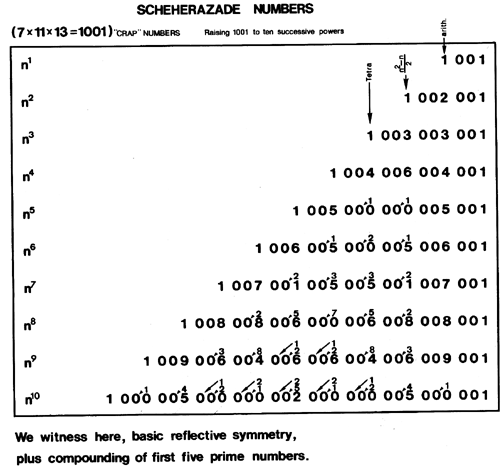

|  |
| Table 1232.21 Cancellation of "Leftward Spillover" to Disclose Basic Reflection Symmetry of Successive Powers of the Scheherazade Numbers: Raising 1001 to ten successive powers, we recognize basic reflective symmetry plus compounding of five basic primes. 7 × 11 × 13 = 1001. |